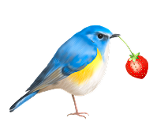
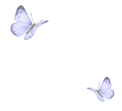
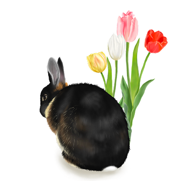
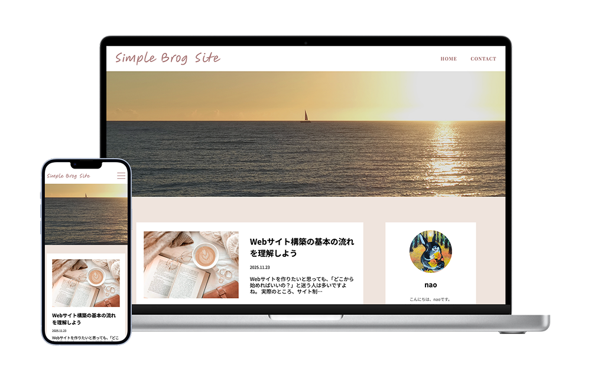
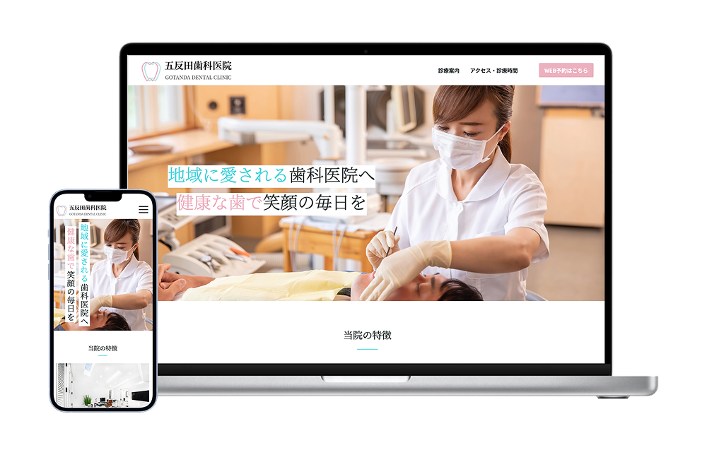
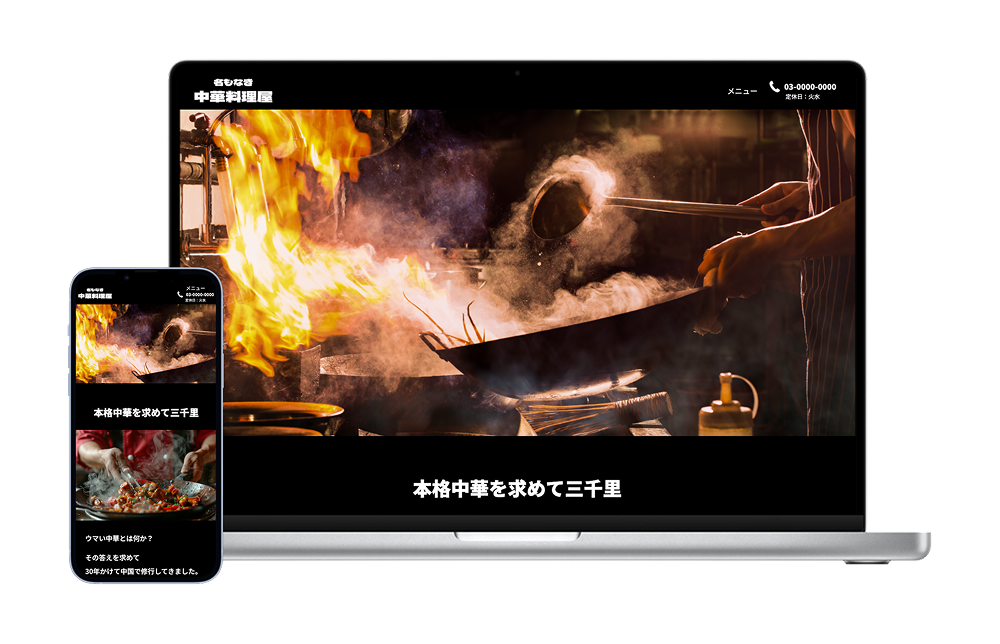
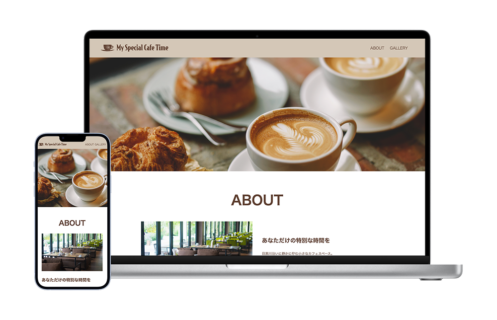

Welcome to My Portfolio
about this site



コーディング力とやわらかなデザインで、想いを伝えるWebサイトを制作します。
デザインからHTML・CSSの実装まで一貫して行い、
使いやすさと伝わりやすさを大切にしたサイト制作をしています。
WORKS
シンプルブログサイト
メディアサイト（ライフスタイルブログ）
投稿内容をメインとするため、全体的にシンプルなデザインとしました。その中で背景色や文字色等は統一感を持たせるために設定しています。
View More →

五反田歯科医院
コーポレートサイト（歯科医院）
診療時間やアクセスなどの情報にすぐアクセスできる構成とし、予約導線も分かりやすく配置しています。
View More →

名もなき中華料理屋
コーポレートサイト（中華料理店／1ページ構成・来店促進を目的）
料理の魅力や店舗の雰囲気が伝わるよう、写真を大きく配置したシンプルなレイアウトとなっています。
View More →

My Special Cafe Time
コーポレートサイト（カフェ／シンプルな店舗紹介サイト）
カフェの落ち着いた雰囲気が伝わるよう、シンプルなレイアウトと余白を活かしたデザインとなっています。
View More →
